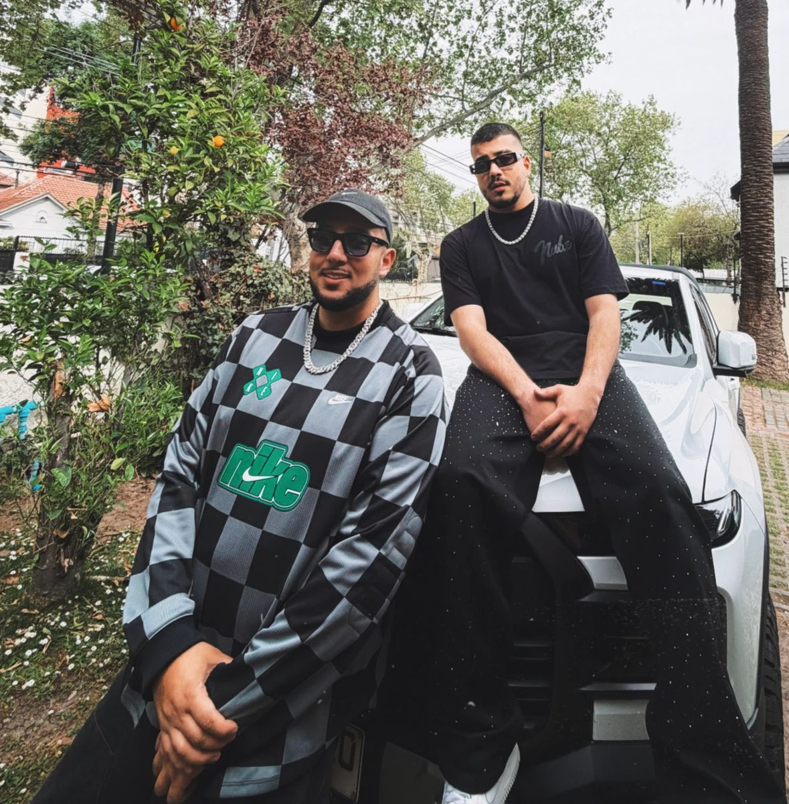

Fran Mera
En vivo
Abriendo para
Beéle
También abrió para
Eladio Carrión
y Feid
Desliza o arrastra ↓
En vivo
momentos.
Desliza ↓ · espacios en blanco = fotos por subir
de iquique
pa'l mundo.
Iquique, Chile ©Cantante, compositor y productor. Hizo del reggaetón su identidad desde los 14 años.
Con un sonido fresco, melodías pegajosas y un estilo propio, ha llegado a las principales radios nacionales, medios, televisión y plataformas internacionales como MTV.
En paralelo, ha desarrollado una destacada faceta como compositor y productor, participando en proyectos de artistas nacionales e internacionales. Hoy sigue lanzando música, explorando sonidos y consolidando su identidad tanto detrás del micrófono como desde la producción.
REGGAETÓN
INTERNACIONALES
COMPOSITOR · PRODUCTOR

Childhood Boys · la historia
dos hermanos.
un sueño.
Childhood Boys nace de los sueños de infancia de dos hermanos de Iquique: Fran Mera y Dímelo Yepo.
Compositores y productores, convirtieron ese sueño en un sello y un estudio propio, donde hoy nacen sus canciones y las de otros artistas.
Fundado por Fran Mera y su hermano Dímelo Yepo. Sello y estudio donde nace cada canción: de la idea al master.
¿ERES ARTISTA? TRABAJA CON CHILDHOOD BOYS →KELOKERA
presenta el nuevo hit.
DISPONIBLE AHORA KELOKERA
Manager · Booking
[Nombre del manager] booking@franmera.com · +56 9 0000 0000© 2026 Fran Mera · Childhood Boys · Hecho en Chile